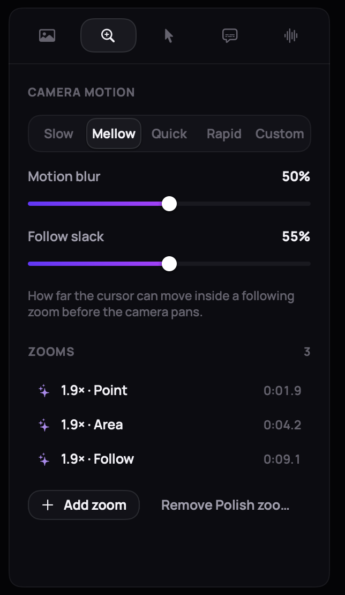
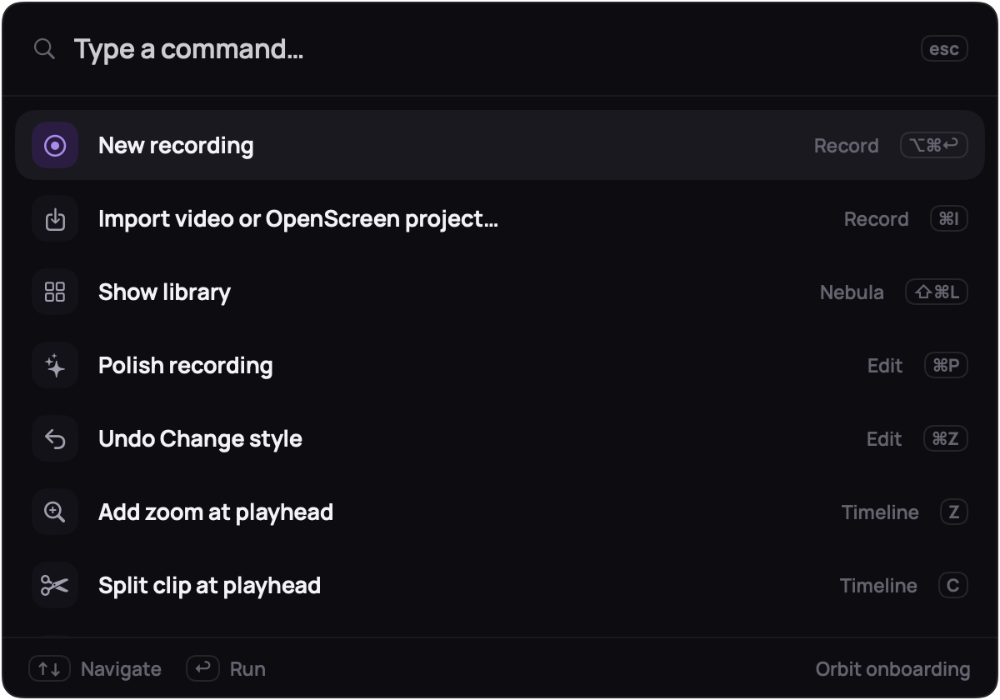
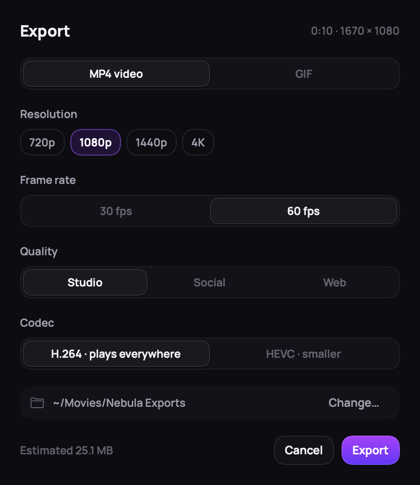

Screen recordings that edit themselves. Nebula records your Mac, then zooms in, cuts the pauses and smooths the cursor for you.
Download for MacGitHub
v1.0 · macOS 15+ · MIT · 3.8 MB

Screen recordings that edit themselves. Nebula records your Mac, then zooms in, cuts the pauses and smooths the cursor for you.
Polish reads your clicks, typing, pauses and voice, then writes ordinary edits you can change. Here is what it did to a 17.5-second recording.

FIG 2A — THE RECORDING

FIG 2B — AFTER POLISH, SAME MOMENT
Polish reads your clicks, typing, pauses and voice, then writes ordinary edits you can change. Here is what it did to a 17.5-second recording.

FIG 2C — THE POLISHED VIDEO, PLAYING
10.3 s
from 17.5 s
3 zooms, 3 cuts and 2 speed-ups. Every one is an edit on the timeline that you can move, stretch or delete.
A timeline that works like a video editor's, and an inspector for everything Polish chose: camera, cursor, background, captions, audio.
Four spring presets, gentle motion blur.

Every command, one searchable list.

MP4 up to 4K60, GIF, or the clipboard.
